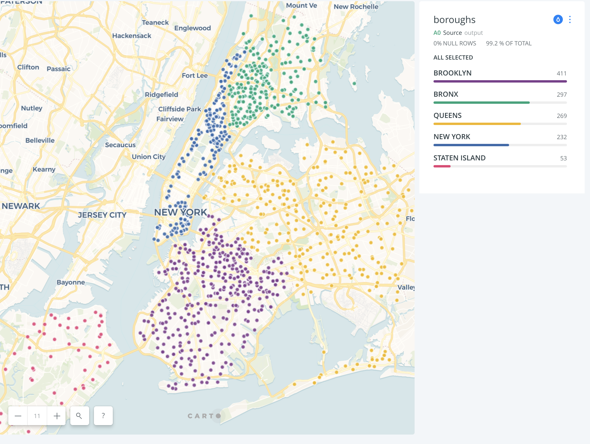

INTRODUCTION
There are many passionate and talented kids who are willing to achieve great things in life but have very limited resources because of their financial background. So, such students deserve to have an opportunity. A non-profit organization like PASSNYC is dedicated to focus on these students to broaden their educational opportunities in New York city as it is the city of most impressive educational institutions in the world. PASSNYC uses public data to identity such students within New York city. It advices students to take Specialized High School Admission Tests (SHSAT), which helps them to decide underperformed students and can help them.
OBJECTIVES
The goal of this project is to analyze which schools in New York has such students and also which part of test are student facing difficulty. This helps PASSNYC to concentrate on the needs of students by using the data and prepare them for the challenges facing in taking SHSAT.
So, now let's see the number of schools in New york city. Brooklyn has highest number of schools followed by bronx and Queens.
From the above shows how the schools are distributed in Boroughs of New York city.